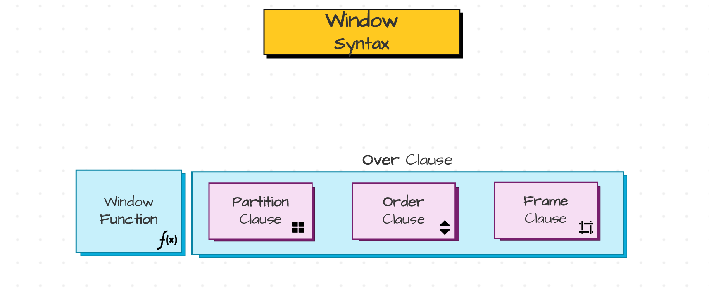
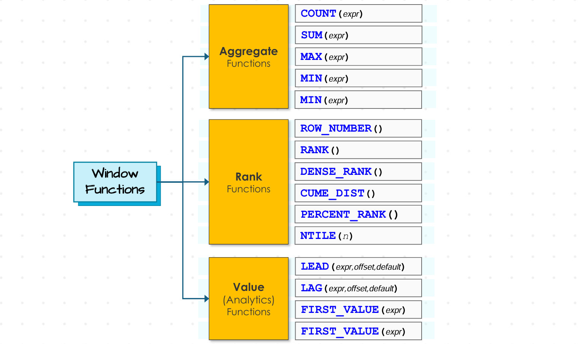
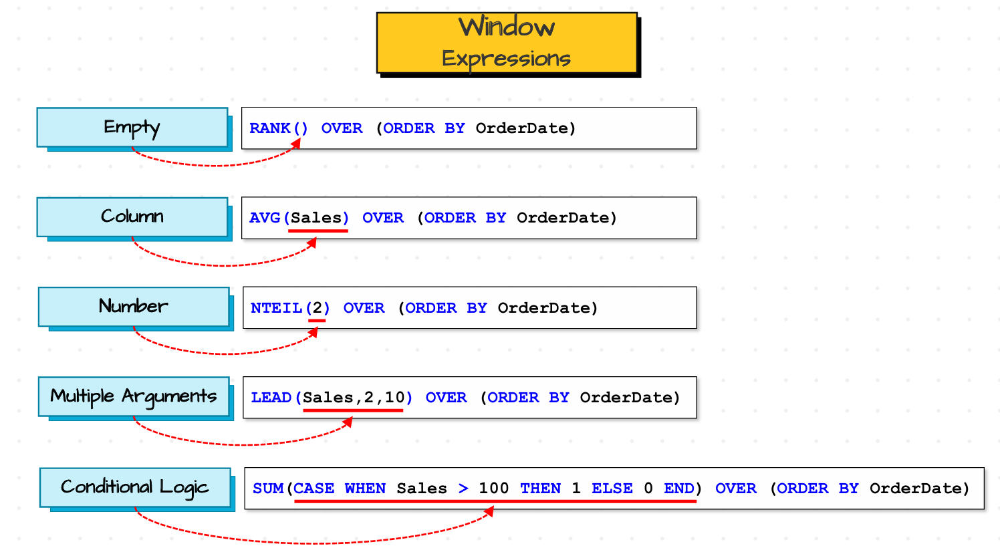
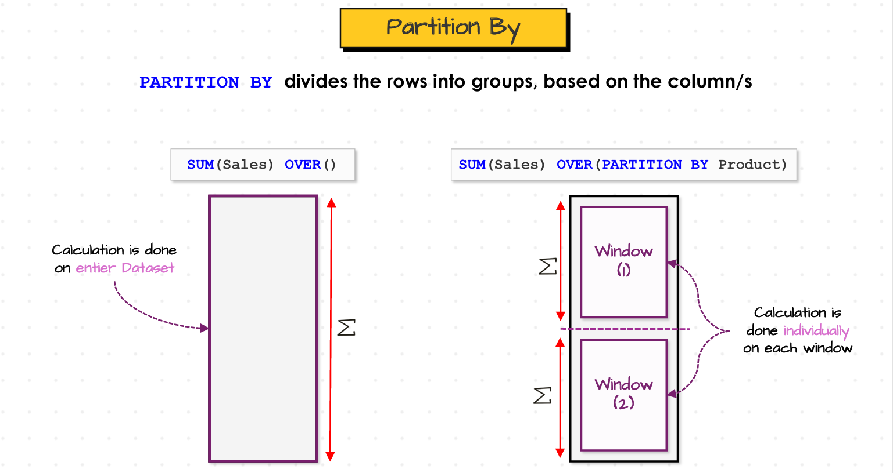
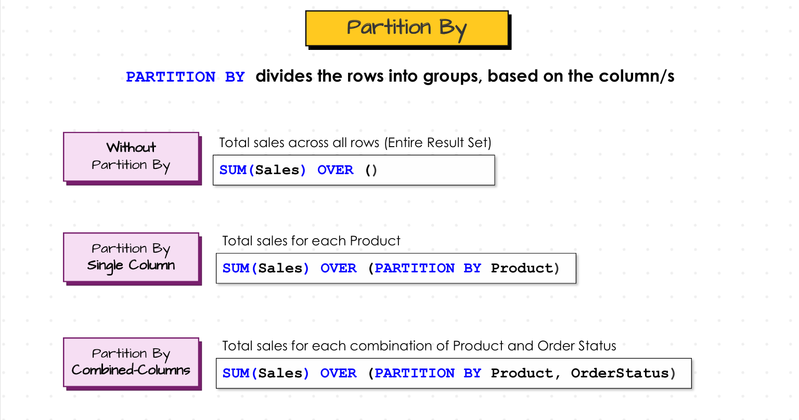
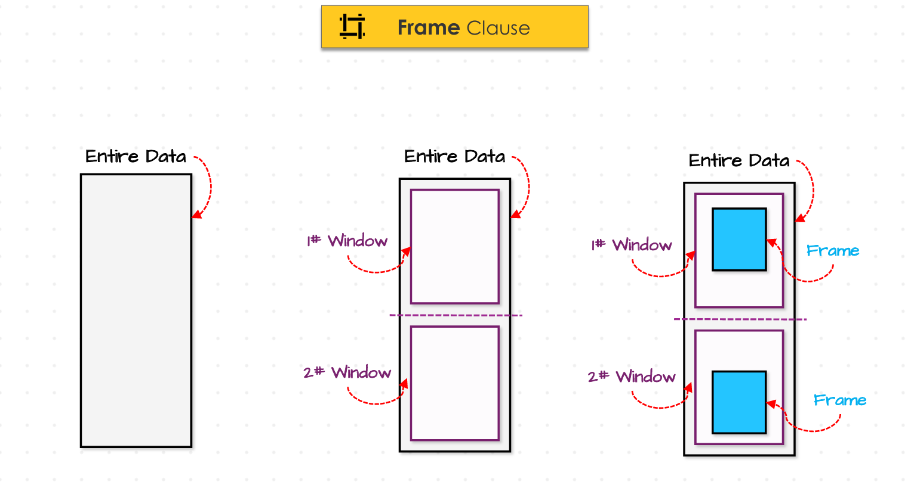
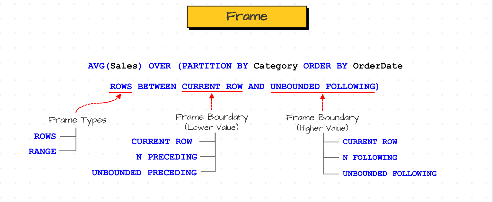
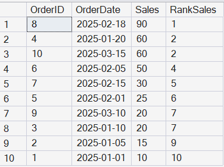
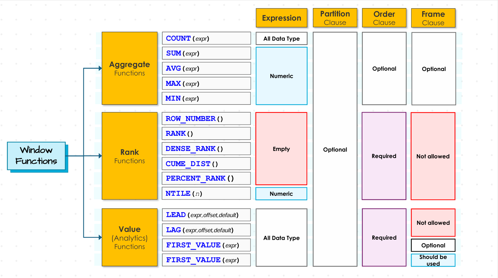
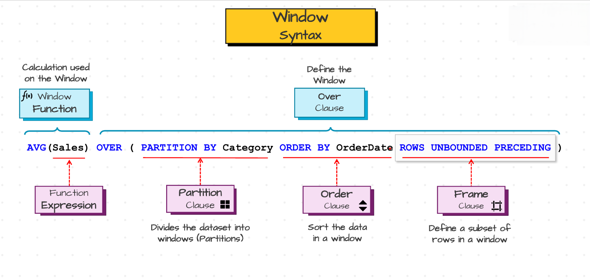

Basics of Window Functions#
Introduction#
Till now we have seen functions to handle and manipulate data which are the major steps while preparing the data. Generally, we call all these functions as row level function where each function takes single row as input and return single output.
Now, we are going to see other type of SQL functions which are actually called as Multi-Row Functions where each function takes multiple rows as input and returns single value as output. These functions are majorly used for performing data analysis tasks such as creating measures and generating reports etc. In SQL we have two types of Multi-row functions. Those are Aggregate Functions and Window Functions.
Aggregate Functions#
Aggregate Functions takes multiple rows as input and returns single value as output. These functions are majorly used to analyze the data such as how many orders we got, what are the total and average sales that our customers made etc.
Major aggregate functions we use generally are:
SUM() : SUM() function returns sum all values for a given input field or column or subset of a field.
AVG() : AVG() function returns average of all values for a given input field or column or subset of a field.
COUNT() : COUNT() function usually returns no of rows present in a given field. If you give
*as input it would return all the rows present in the table or respective subset if GROUP BY is used.MIN() : MIN() function returns the minimum value of a given field or column.
MAX() : MAX() function returns the maximum value of a given field or column.
Ex : Find the total sales, average sales, total no of orders, minimum and maximum sales we have got from orders table.
SELECT SUM(Sales) as TotalSales, AVG(Sales) as AverageSales, COUNT(*) as TotalOrders, MIN(Sales) as MinimumSales, MAX(Sales) as MaximumSales FROM Orders
If you combine these aggregate functions with GROUP BY then we might get analysis for particular group or category which is more useful for analytics part.
But, we might get the situations where we need aggregations and also each level details. I mean by using GROUP BY we might get average sales of each customer made. But what if you want to know whether customer made any order with the order sales is more than the Average Sales. We cannot get order details along with aggregations using GROUP BY as GROUP BY decreases the level of granuality of the information. In this case GROUP BY removes all the other order details and keeps only aggregations and respctive category. But to solve above task, we need other levels of granuality of information such as sales made by each customer in each order etc.
To do these kind of tasks, SQL provides new functions which are called as window functions.
Window Functions VS GROUP BY#
Window Functions are the type of SQL functions which are used to perform calculations (e.g aggregations) on specific subset of data, without losing the level of details of rows. This is similar to GROUP BY but with group by we lose level of details of rows.
For example, we have 4 orders in our orders table where we have 2 products. Now we want to find the sales of each product. First lets apply GROUP BY. GROUP BY actually make same products into one group and sums up respective sales. In this case, we have it will return two rows and respective product sales. This means it automatically decreases the total rows to 2 by removing the row level details of each row. But what if you want to retain the row level details of each product such as orderID, sales along with average sales of each product. Then group by actually fails in these case.
So for this we use window functions here. Now lets see what actually levels of granularity mean. Suppose we have 10 orders and lets find the average sales of all 10 orders.
Now we write below sql query to get this.
SELECT AVG(Sales) as AverageSales FROM Orders
The above result shows highest level of granularity. Now lets go down to medium level of granularity by distributing these Average sales to each customer’s average sales. Here we actually use GROUP BY clause to get these results.
SELECT CustomerID, AVG(Sales) as AverageSales FROM Orders GROUP BY CustomerID
Now we open anothor level of granularity where we need average sales of each customer along with their each order sales to check whether customer made any order with sales greater than average sales of the customer. This is actually low level of granularity. This could be achieved by window fuctions.
SELECT CustomerID, OrderID, OrderDate Sales, AVG(Sales) OVER( PARTITION BY CustomerID) as AverageSales FROM Orders
From these we can see that GROUP BY clause is majorly used to do Simple Analytical tasks, where as window functions are used to do advanced analytical tasks where we need low level details of each rows.
Syntax of Window Functions#
The general Syntax of a window function is shown in below image.

Window Function SyntaxThe first part in the syntax of the window function is WINDOW Function itself. This function is used to perform the calculations on top of window. There are different type of window functions available in SQL. Those are :

Window FunctionsThis window function accepts arguments to perform the task. Theose argument might be empty or a column or a Number or a Conditional logic or it might accept multiple arguments. Some example asre shown below.

Window ExpressionsThe second part of window function is OVER() clause which defines the window and tells sql that these function defined before is used as window function. This OVER() has some optional clauses. Those are PARTITION clause, ORDER Clause, FRAME Clause.
PARTITION BY : PARTITION BY CLAUSE actually divides the dataset into windows or partitions or groups similar to GROUP BY clause. PARTITION BY clause divides the dataset into windows based on the columns. Below image shows how partition by do calculations.

Partition By CalaculationsWe can do calculations without partition by which makes entire dataset as one window. We can do calculations by doing partitions of entire dataset using one or multiple columns.

Partition By ExamplesNow lets find the average sales of each product along with orderID, orderDate, Sales
SELECT OrderId, OrderDate, ProductId, Sales AVG(Sales) OVER(PARTITION BY ProductID) as SalesByProduct FROM Sales.Orders
ORDER BY : ORDER BY Clause is used to sort each window seperately. If we use ORDER BY along with PARTITION BY then ORDER BY actually sorts each window seperately either in ascending ot descending order.Otherwise it sorts enitre dataset as entire dataset is considered as single window if PARTITION BY is not specified. Generally Order BY clause is mandatory when we are using window rank and value functions.
Ex : Rank each order based on thier sales from highest to lowest additionally provide details such as OrderID, OrderDate etc.
SELECT OrderID, OrderDate, Sales, Rank() OVER(Order BY Sales DESC) as RankSales FROM Sales.Orders
FRAME : FRAMES are used to define windows within the partition or windows itself. Generally we partitions inside partitions are FRAMES. Here we are not actually partitioning the data. We are actually sliding a window upon partitions and do calculations upon rows in that sliding window inside partitions. To create that sliding window we use frames. We can see frames in the below image.

Demosntration of FramesThe syntax of Frame consists of Frame Type, Lower and Upper Boundray. We have two Frame Types. Those are
ROWSandRANGE.ROWgenerally indicates rows in the table whereasRANGEindicates the range of values which are equivalent to current value. Lower Boundary values areCURRENT ROW(indicates current pointing row),N PRECEDING(N rows preceding current row),UNBOUNDED PRECEDING(pointer before first row). Upper Boundaries areCURRENT ROW,N FOLLOWING(N rows after current row),UNBOUNDED FOLLOWING(pointer after last row).
Syntax of FramesThere are some rules for using Frames. Frame Clause must be used together with order by clause only. Lower value must be before higher value.
Ex : Find the cumulative sum of each sales by each customer from first order to lastorder by including OrderID, CustomerID, OrderDate, Sales.
SELECT OrderID, CustomerID, OrderDate, Sales, SUM(Sales) Over(PARTITION BY CustomerID ORDER BY OrderDate ROW BETWEEN UNBOUNDED PRECEDING AND CURRENT ROW) as CumulativeSales FROM Sales.Orders
Generally, if you use orderby then there would be default frame i.e
RANGE BETWEEN UNBOUNDED PRECEDING AND CURRENT ROWEx : Rank the orders based on their sales from highest to lowest additionally provide details of orderdate, orderid etc.
SELECT OrderID, OrderDate, Sales, RANK() OVER(Order By Sales DESC) FROM Sales.Orders

Rank Sales OutputIn this example if you see the output, the rank of order 4 and 10 is same because they have same sales. We achieved this because by default the Frame Type is
RANGE. RANGE actually defines a frame that starts at the lower boundary and includes every row whose ORDER BY column (sales here) has the same value as the current row. Since order 8 and 10 has same sales it given same rank. But RANK functions generally won’t allow frames and its only decided by the order by clause itself. Below image shows the type of clauses allowed by each window functions.
Window Functions Clause AllowanceSo Overall Syntax of Window Function is shown below.

Overall Window Function Syntax
Rules of Window Functions#
Rule 1 : Window Functions can be used only in SELECT and ORDER BY Clause.
Rule 2 : Nesting Window Functions are not allowed.
Rule 3 : SQL execute window functions after WHERE Clause.
Rule 4 : Window Functions can be used together with GROUP BY Clause in the same query, ONLY if the same columns are used.
Ex : Rank the customers based on thier sales.
SELECT CustomerID, SUM(Sales), RANK() OVER(ORDER BY SUM(Sales)) As RankCustomers From Sales.Orders GROUP BY CustomerID